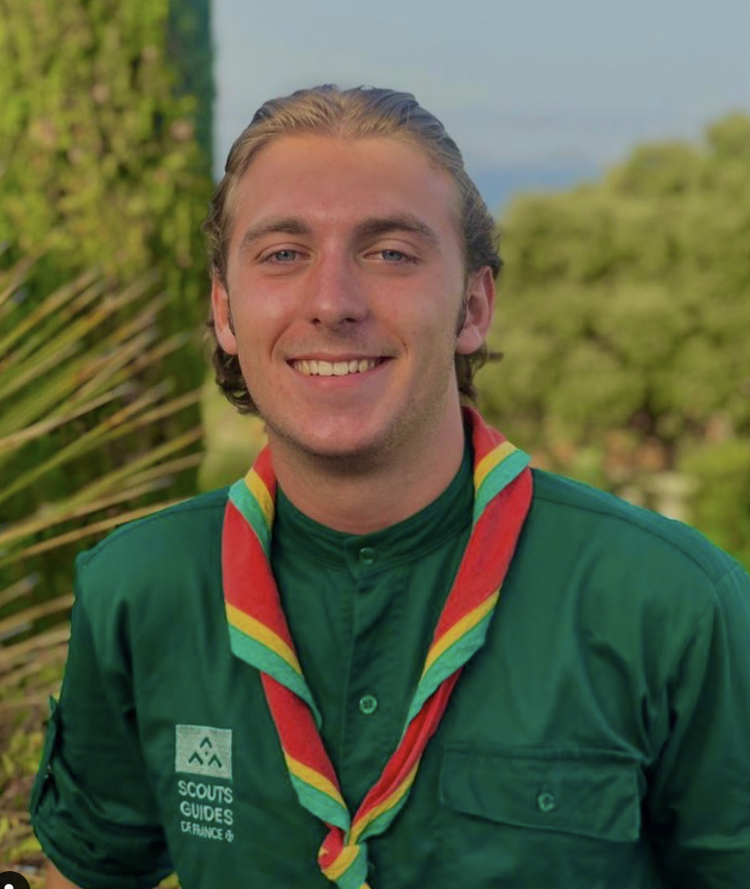

Salut, moi c’est JULES, la deuxième perche de cette équipe. Je vais avoir 18 ans en novembre. Je fais des études d’économie à HEC Lausanne. 1m90, des cheveux frisés, un bon vivant et on a fait le tour! C’est la onzième année que je fais partie du mouvement scout. Dans la vie je suis ✨bienveillant✨je me préoccupe de ce ressente les autres et suis à l’écoute. Un peu touche à tout, dans l’équipe, c’est moi qui gère l’hébergement et le materiel ! 🦙

Holà !! Moi c’est ANTHELMA, comme la plupart des gens de cette équipe je suis née en novembre 2003 (le 16 précisément). Niveau études, je suis en première année d’école de management à l’IAE Lyon et à côté j’adore sortir, jouer du piano, dessiner, manger et enfin dormir. J’adorrrreeeee rire et on dit de moi que je suis ✨déterminée✨je vais toujours au bout des défis que je me lance ! En ce qui concerne le scoutisme, j’entame ma onzième année et je suis la responsable hébergement et co-responsable intendance ! 𓃴

Salut, moi c’est JEAN, une grande perche de 1,90m et de 18 ans. Je suis étudiant en ingénierie à l’EPFL, mais aussi un grand fan de tennis et de conneries, cuisinier en carton. Je suis scout depuis 11 ans maintenant. On dit de moi que je suis ✨curieux✨, j’aime découvrir de nouvelles choses et je m’intéresse à tout. Enfin, je suis le trésorier de l’équipe, je m’occupe de tous ce qui est finance et budget ! 🦌

Coucou, moi c’est FANNY, la 2002 de l’équipe. Je vais avoir 20 ans en mai. Cette année je suis en deuxième année à l’ISARA, une école d’ingénieur dans le domaine de l’agronomie, l’agroalimentaire et l’agriculture. Je fais de la boxe depuis 5 ans après avoir fais 10 année de gym et d’équitation. Je suis dans ma 12ème année scout. Aussi, on dit de moi que je suis ✨optimiste✨, je garde toujours espoir en essayant de voir le bon côté des choses. Enfin, dans l’équipe je suis responsable intendance, je trouve des menus pour qu’on soit toujours en forme ! 🐼

Bonjour à tous , moi c'est VICTOR, j’ai 18 ans. Je suis quelqu'un d'assez dynamique, tous mes compagnons peuvent en témoigner. Je commence ma première année d'ecole de commerce à Lille à l’IESEG. Et cela fais maintenant 5ans que je fais partie du mouvement scout ! On dit de moi que je suis ✨attachant✨, je fais attention aux autres et je suis plutôt sociable. Dans l’équipe, je suis responsable communication, je m’occupe des échanges entre l’équipe et l’extérieur ! 🦊
Salut, moi c’est ALBANE, je suis là plus petite de l’équipe (que ce soit en taille ou en âge). Je vais avoir 18 ans en novembre. Cette année je commence ma première année de médecine. Mais je fais aussi de la natation depuis 11 ans et je débute ma 10ème année scout. A part ça, on me qualifie de ✨rayonnante✨, je garde toujours le sourire et j’aime rire et m’amuser. Enfin, dans l’équipe je suis responsable spirituelle ! 🦜

Nous préparons ce beau projet depuis deux ans. Il s'inscrit dans la continuité de la pédagogie scoute et nous le voyons comme l'aboutissement de notre parcours au sein des Scouts et Guides de France. Avec Los Caminos de Esperanza, nous avons défini quatre objectifs principaux :
-Gestion de la vie quotidienne de la maison d'accueil : soutien scolaire matin et après-midi, jeux et activités collectives, rencontre avec les familles
-Bricolage dans la maison d'accueil pour en consolider le premier étage et entretenir les installations existantes
-Organisation d'un évènement scout de 3 jours sous la forme d'un mini-camp ou d'un grand jeu pour les enfants, en partenariat avec les scouts de Barrancabermeja
-Restauration et consolidation d'une école du petit village reculé de Rancho